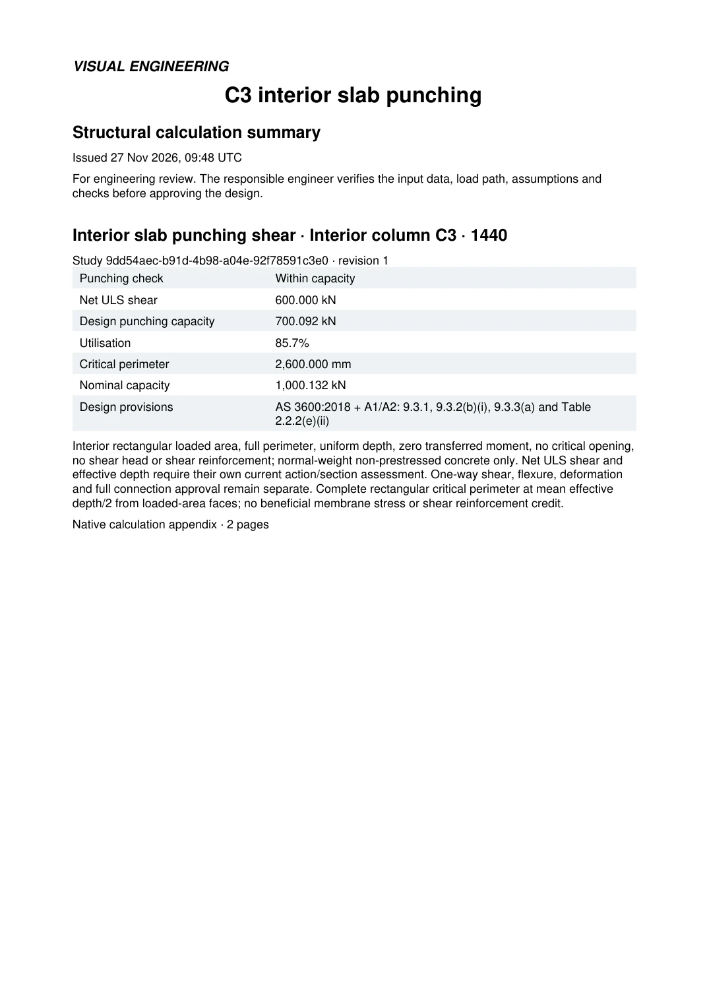

Interior slab punching shear
Check a 300 × 600 mm interior column in reinforced concrete. At 160 mm mean effective depth the design punching capacity is 525.608 kN. Raising the reviewed net ULS action from 400 to 600 kN takes utilisation from 76.1% to 114.2%.
The issued comparison below uses a 240 mm slab with a 200 mm mean effective depth. With the same 600 kN action the critical perimeter measures 2,600 mm and utilisation is 85.7%. The engineer verifies the net action, depth and applicability of the full interior perimeter to the project.
Loading the report…
